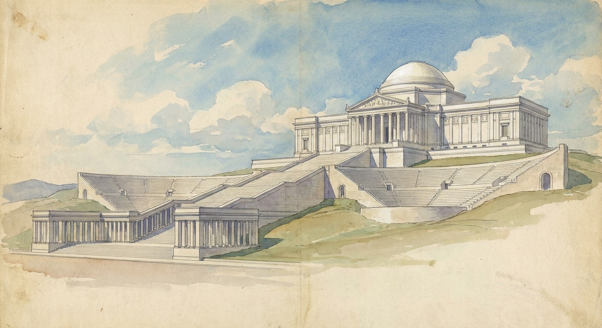

A titanium titan bound for Starbase, a colossus proposed for Alcatraz, an arch and a garden of heroes rising in Washington, and the towers we have filed for Puget Sound. The Republic is 250 this year. This is the brief in support.
In a foundry outside Paris this week, a workshop called Atelier Missor finished a fifteen meter Prometheus, cast in titanium, bound for SpaceX's Starbase in Texas. The atelier was founded in 2021 by two brothers who cast the old way, molten metal poured into plaster molds taken from wax models, a technique roughly six thousand years old. Their first act was gifting a three meter bronze of Napoleon to the city of Nice. Their stated ambition is an American foundry and thousands of statues honoring the Western tradition, and their standing line is that our era needs statues.
Nobody casts monuments in titanium. It is lighter than bronze, stronger than steel by weight, and it does not corrode. A titan cast in titanium is not a metaphor, it is an engineering specification, and it meets the standard this organization has argued for since its founding: permanent materials for permanent statements.
The statue is one item in a longer ledger. For the first time in several generations, colossal civic ambition is under construction in America, on both coasts and in the capital, and this brief is filed as a friend of all of it.
France has sent a colossus before, and America almost said no. Bartholdi's Liberty was assembled to full height over a Paris courtyard in 1884, taken apart into 350 pieces, and shipped across the Atlantic in 214 crates. Congress would not fund the pedestal. The project stalled until Joseph Pulitzer opened the New York World to small donors in 1885, and about 120,000 Americans gave roughly $102,000, most of them less than a dollar each. The editorials that called the statue a folly are remembered by no one. The statue is recognized by everyone on earth.
At the turn of the last century this kind of ambition did not need a defense, because it was the working assumption of the men running the country's cities. Daniel Burnham is the proof. In 1893 he raised a city of two hundred buildings on a Chicago swamp in twenty-six months and the fair opened on time. In 1902 the McMillan Commission he anchored gave Washington the Mall as Americans know it. And from the spring of 1904 to the summer of 1905 he worked from a cottage on Twin Peaks above San Francisco, tracing forty-three sight lines across forty-nine summits, and delivered the city a complete plan on September 27, 1905. He took no fee.
The report ran 184 pages and 73 plates, nine chapters, each one a buildable program: a civic center on a 1,200 foot oval at Van Ness and Market with a 200 foot Doric column carrying a colossal bronze at its center, an outer boulevard, the hills held for the public, a park system running from the Civic Center to the ocean.

Chapter VII was the Athenaeum. Burnham specified a national university campus at Lake Merced: a library modeled on the Bibliothèque Nationale, an observatory, formal gardens, rowing courses on the lake itself, and a residential quadrangle for two thousand students. He positioned it as the intellectual anchor of the Pacific city, the West Coast counterpart to Harvard and Columbia. Look at the plate and then look at the renders for the Prometheion ringing Alcatraz; it is the same instinct, a crown of civic architecture on the most commanding ground available, built to tell the city what it is for. The Athenaeum site became San Francisco State, the zoo, and a golf course. None of it is what Burnham specified, which means the chapter is not dead, it is still pending.
The plan itself was delivered seven months before the 1906 earthquake and buried in the rush to rebuild fast rather than well. That is the cautionary half of the story: ambition at this scale has a window, and a city that misses the window waits a century for the next one. The window is open again now, and this time it is open in Texas, in San Francisco Bay, in Washington, and in Puget Sound at once.
The Missor Prometheus is headed for the company town of the American launch industry. The pairing is exact: Prometheus stole fire from the gods and handed it to men, and Starbase exists to hand men the means to leave the planet. A country that put Paul Manship's gilded Prometheus at the center of Rockefeller Center in 1934, in the middle of the Depression, will understand a second one standing over a rocket works in Texas.
In San Francisco, the American Colossus Foundation proposes a Prometheus roughly 450 feet tall over Alcatraz Island, taller than the Statue of Liberty, ringed by a museum called the Prometheion, privately funded, and offered as a gift for the country's 250th birthday. The site argument is the strong one. Alcatraz carried the first lighthouse on the Pacific coast in 1854 and the first American fort at the Golden Gate; the penitentiary everyone knows ran twenty-nine years and has now been closed more than twice as long as it was open. The most prominent rock in the finest harbor on the Pacific coast is a ruin with a gift shop, and the current federal proposal is to spend $152 million making it a prison again. The Greeks raised the Colossus at the harbor mouth of Rhodes because arrival is the moment a city says what it is. A closed prison is not a civic identity. A harbor entrance is.
The proposal is early. There is no filing at Interior, and raising anything on a National Historic Landmark inside the Golden Gate National Recreation Area means Congress, environmental review, and Section 106 consultation, with public comment at every stage. That is where friends of the project file, and we will. A monument should clear a high bar. The bar is what separates a monument from a billboard.
The capital is not debating ambition, it is pouring concrete. The White House ballroom is under construction, with the East Wing cleared and Clark Construction under contract. A Triumphal Arch is planned for the Arlington Memorial Bridge approach, the ceremonial axis the McMillan Plan drew in 1902, with construction slated to begin in 2026. The National Garden of American Heroes is sited for West Potomac Park, with the National Endowment for the Humanities funding commissions for some 150 sculptors, the largest federal statuary program in the country's history. The Reflecting Pool is being renovated. And behind all of it stands EO 14344, which made classical architecture the default for federal buildings. One can argue any single project. Together they are the first coordinated monumental program in Washington since the McMillan Commission, and the sculptors the NEH is funding are the future workforce of every atelier, including the French one trying to open an American foundry.
We are not filing this brief as spectators. Our own docket runs the same direction. Seattle's Tallest Building Plan starts from the two places the city actually sees itself, I-5 at SeaTac and the crest of the Ship Canal Bridge, where the skyline has a hole between Columbia Center and Rainier Square. The next tallest building in Seattle goes exactly there, and it goes up in materials that will not look dated in fifteen years. Redmond's Tallest Building Plan makes the suburban case: Busan put a 101-story tower on the beach at Haeundae, while Redmond headquarters Microsoft, just opened light rail, holds 640 acres of parkland on Lake Sammamish, and caps its downtown at 144 feet. Redmond's tallest building is the opening move in the doctrine of beautiful suburban architecture. Behind those sit the rest of the docket: twin mega-bores through the Cascades on the Gotthard model, and a semiconductor play for Centralia. The scale is the point. Small plans do not get built either; they just fail quietly.
Burnham Civic supports the titan at Starbase, the colossus proposed for Alcatraz, the monumental program under way in Washington, and the towers we have drawn for Puget Sound, on the same grounds. The materials are permanent. The sites are the most symbolically loaded ground available. The funding models, private gifts and crowdfunded pedestals and commissioned sculptors, have a 140 year old American precedent. And the calendar is real: Burnham proved in 1893 that twenty-six months is enough time to build a city, and the semiquincentennial is this year. The clarity of 1905 is available to anyone willing to claim it.
The founders of Atelier Missor say our era needs statues. We agree, and we would add that it needs towers, arches, and harbors that announce something on arrival. Make no little plans. We file accordingly.